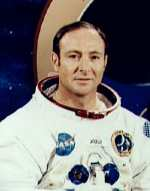

Mitchell naît le à Hereford (Texas), mais c'est au Nouveau-Mexique
qu'il passe son enfance. Il y fait ses premières études, d'abord à Roswell (Nouveau-Mexique),
puis à Artesia. Il reçoit un Bachelor of Science in Industrial Management du CIT de Pittsburg (Pennsyvalnie) en .
Marine
Cette année-là il rentre dans la Navy. Après un entraînement de base au San Diego Recruit Depot, il entre à l'Ecole des Officiers de Newport (Rhode Island)
en et est nommé Enseigne. Il suit alors une formation de pilote à Hutchinson
(Kansas) jusqu'en où est affecté à la 29ᵉ Escadrille de Patrouille, déployée à Okinawa (Japon). De , il pilote un Douglas A3 Skywarrior
alors qu'il est affecté au 2ᵉ Escadron d'Attaque Massive à bord de l'USS Bon Homme Richard et de l'USS
Ticonderoga. Il sert alors comme Pilote de Projet de Recherche au 5ᵉ Escadron de Développement Aérien pendant
1 an. En il est nommé au grade d'ingénieur par la Navy Postgraduate School de Monterey (Californie).
MIT
Suite de cette affectation, il entre au MIT, où il obtient
un doctorat
d'Aéronautique et Astronautique en 1964. Il devient alors Directeur de la Division de
Gestion de Projet du bureau de la Marine pour le Laboratoire d'Orbite Habitée
jusqu'en , où il entre à l'Ecole des Pilotes de la Recherche Aérospatiale à la base aérienne d'Edwards(Californie).
Une fois formé 1 an plus tard, il devient instructeur de l'école.
NASA
En il est sélectionné par la NASA pour rejoindre le programme
spatial de vol habité. Il commence dans les équipes de support de la mission Apollo 9, le second vol Apollo habité, et comme pilote de doublure du
module lunaire pour Apollo 10.
Apollo 14
Mitchell en combinaison d'astronaute d'Apollo 14

Mitchell sur la Lune en 1971
Du , il participe à la mission Apollo 14, en tant que pilote du module lunaire (Stuart A. Roosa est
pilote du Module de Commande). Il est le 6ᵉ homme à marcher sur la Lune : avec le commandant Alan B. Shepard
Junior, il va rester 33 h et 31 mn à la surface de la Lune, explorant par 2 fois des régions lunaires, parcourant
plus de 1mile et recueillant 42,6 kg (94 livres) d'échantillons lunaires. D'abord la région au nord du cratère Fra
Mauro. Intéressé par les phénomènes psychiques Mitchell, E. D. & White, John: Psychic
Exploration: A Challenge for Science, 1974, Mitchell aurait mené au cours de sa mission et sans
autorisation quelques expériences de perception extrasensorielle, telle que des tentatives de transmettre des
images télépathiquement à des gens sur Terre Source ?. Le 9 février ils repartent vers
la Terre.
Par la suite il sert dans les équipes de support et de doublure pour les missions suivantes, comme Apollo 16.
En , Mitchell quitte la Marine et le programme spatial. Il
devient membre de l'AIAA.
Retraite paranormale
Mitchell
Intéressé par la parapsychologie, il fonde l'Institut des Sciences Noétiques à
Palo Alto (Californie).
Mitchell a déclaré penser que les ovnis proviennent d'une autre dimension.
De , il est président de la Edgar Mitchell Corp. à Palm Beach (Floride).
Entrevue sur les ovnis
Le , il aurait eut des contacts avec des hauts membres du congrès qui lui auraient
confirmé que les civilisations extraterrestres existent, et que le gouvernement le cache. Selon lui, 125 autres
témoins disposant d'accréditations "Top Secret" seraient prêts à en témoigner.
De fait, à cette date il rencontre au Pentagone le
vice-amiral Thomas Wilson :
Il m'a d'abord répondu qu'il n'était pas au courant, mais qu'il allait faire des recherches. Il m'a rappellé
quelques semaines plus tard et m'a dit qu'il avait retrouvé la source du financement de ce programme secret. Il
a ajouté qu'il allait poursuivre son enquête, parce que si tout celà était vrai, ça devrait faire partie de ses
attributions d'en être informé. Ce furent ses propres mots.
Le , lors d'une convention annuelle intitulée The UFO Experience, Mitchell déclare
:
Jusqu'à aujourd'hui, je m'étais montré très réservé à propos des expériences de type ovni, et j'avais toujours
évité de participer à des conférences. Mais je pense maintenant qu'il y a suffisamment d'éléments justifiant des
recherches scientifiques dans ce domaine (...).
Je dois d'abord vous dire que ceux qui prétendent qu'il y a des structures sur Mars ou sur la Lune, sont des
mythomanes. J'en suis sûr au moins pour la Lune : j'y suis allé ! (...)
Toutefois, j'ai eu l'occasion durant ma carrière de discuter avec des gens ayant travaillé pour des agences et
des organismes militaires. De ces conversations, j'ai acquis la conviction que le gouvernement américain continue
à maintenir le secret sur les ovnis. Beaucoup de ces personnes étaient assujetties à un degré de sécurité élevé et
avaient prêté sermet, ce qui ne leur a pas permis de révéler publiquement ce qu'elles savaient sur ce sujet Tom Rhodes, Aliens exist - Just ask the man on the moon, Sunday Times,
New York, 11 octobre 1998.
Mitchell
Interrogé par un journaliste anglais, Mitchell répond :
A mon avis, des extraterrestres ont visité notre planète. Si j'en juge par les propos que m'ont tenus certains
informateurs hautement qualifiés, cela ne fait aucun doute dans mon esprit. Le gouvernement américain, tout comme
d'autres gouvernements dans le monde, possède des milliers de dossiers sur des observations d'ovnis qui ne peuvent
être expliquées. Aussi, je pars du principe que certains des témoins ont dû
voir un appareil extraterrestre. (...) Lorsque j'ai appris que les extraterrestres existaient vraiment, je n'ai
pas été trop surpris, car j'ai parfaitement conscience que la vie peut être très répandue dans l'univers. Par
contre, ce qui m'a choqué, c'est quand il y a 10 ans j'ai commencé à mener des recherches sur les rapports faisant
état de ces visites extraterrestres. Elles me montraient que des preuves de ces intrusions avaient été étouffées.
Il n'y a pas que le gouvernement américain qui a dissimulé ces preuves, d'autres ont fait de même, dont le
gouvernement britannique.
Il déclarera également :
L'ère moderne des ovnis a réellement commencé avec un incident qui s'est produit en , quand un appareil accidenté contenant les corps de plusieurs
extraterrestres a été découvert près de Roswell au Nouveau-Mexique. Non, je ne fais pas d'erreur, l'affaire de
Roswell s'est bien produite. J'ai vu des dossiers
secrets qui montrent que le gouvernement savait tout à ce sujet, mais qu'il avait décidé de cacher l'information
au public. Il y a de bonnes raisons pour expliquer ce silence, des raisons de sécurité essentiellement. Par
exemple, avouer une telle chose pouvait provoquer une panique au sein des populations. (...) Le problème le plus
difficile à résoudre est de savoir si nous sommes toujours visités par des extraterrestres à l'heure actuelle.
Pour ce qui me concerne, je vous dirai qu'il est tout à fait possible que nous soyons encore actuellement visités
par de telles créaturesThe
People, 25 octobre 1998, LondresSvahn,
Clas: "An Alien Spaceship Crashed on the Moon", UFO Actuellt, 2005-11-05.
En , en parallèle de son institut, il co-fonde Quantrek, une organisation dédiée à la
recherche sur la ZPE, la conscience et les
extraterrestres.
Le , Mitchell envoie un mail à John Podesta lui proposant une
conversation avec lui et le président Obama au sujet du besoin de divulgation extraterrestre Eryn M. Sepp
(assistante spéciale de Podesta) ne lui répond que , proposant une 1ère rencontre avec
Podesta seul en . Mitchell ne pourra cependant se déplacer à Washington (DC), et propose de
joindre la réunion avec Rebecca Hardcastle Wright (fondatrice de l'Institut d'Exoconscience) par Skype "Re: Apollo Astronaut, Dr. Edgar Mitchell’s, Request for Meeting to discuss Disclosure", Wikileaks.
Le , c'est Terri Donovan Mansfield ("directeur de la task force sur la paix avec les
intelligences extraterrestres") qui demande par mail au nom de Mitchell une discussion Skype avec Podesta ASAP sur la différence entre les êtres célestes de notre système
solaire et leur domination par ceux de l'univers contigu non-violent"email for John Podesta re talk with Edgar Mitchell cc: Eryn", Wikileaks.
Mitchell meurt en Floride le , la veille du 45ᵉ anniversaire de son allunissage.
En Jeremy Corbell sort un documentaire sur Mitchell Corbell, J.: Moonwalker,
2019.
Mitchell, E. D. & Williams, Dwight: The Way of the Explorer,>1996